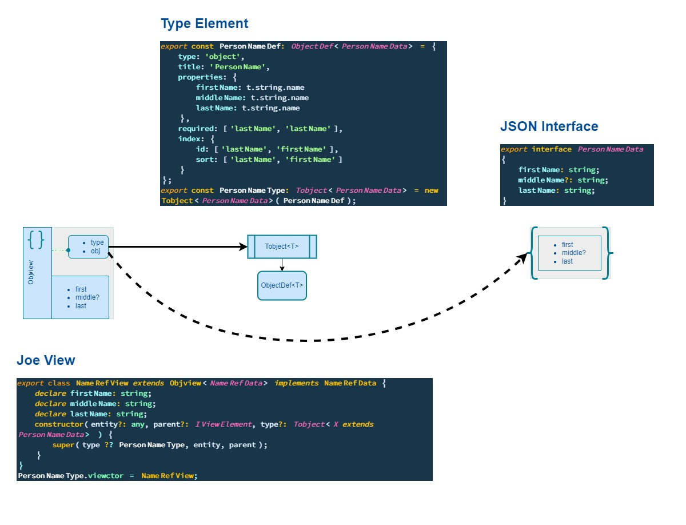

View Element: JOE class that behave like a typedproxy(under steroid) over aJSONelement.
A View Element is a Generic class whose role is to be a View of T.
A JOE View relies on 3 definitions :
A Static Type definition aka typescript interface,
An Element Type that rules the Type behaviours at runtime:
Type validation,Type metadata enhancement,View instanciation.An Element View that extends your typescript interface as a View<T> class
To avoid naming collision with your code all JOE property or function names on an Element View are prefix by a $.
validate method has no $ prefix.
constructor(entity?: any, parent?: IViewElement, type?: Tobject<X extends T> ) {
...
}You retrieve in the View Element Contructor all the here above core definitions:
JSON instance implementing T: any and not Partial<T> because Partial<T> doesn't allow Partial<?> all along the hierarchy,Element Type that enforce T Type behaviour,View Element as the current View Element may be the inner element of an hierarchical Type Model.Those 3 instances are the core elements of an View element architecture.
A View Element exposes two inner object instance:
A Validation Context that is its validation state,
An Editor that is assigned when the View Element is editing
return this._editor !== undefined;